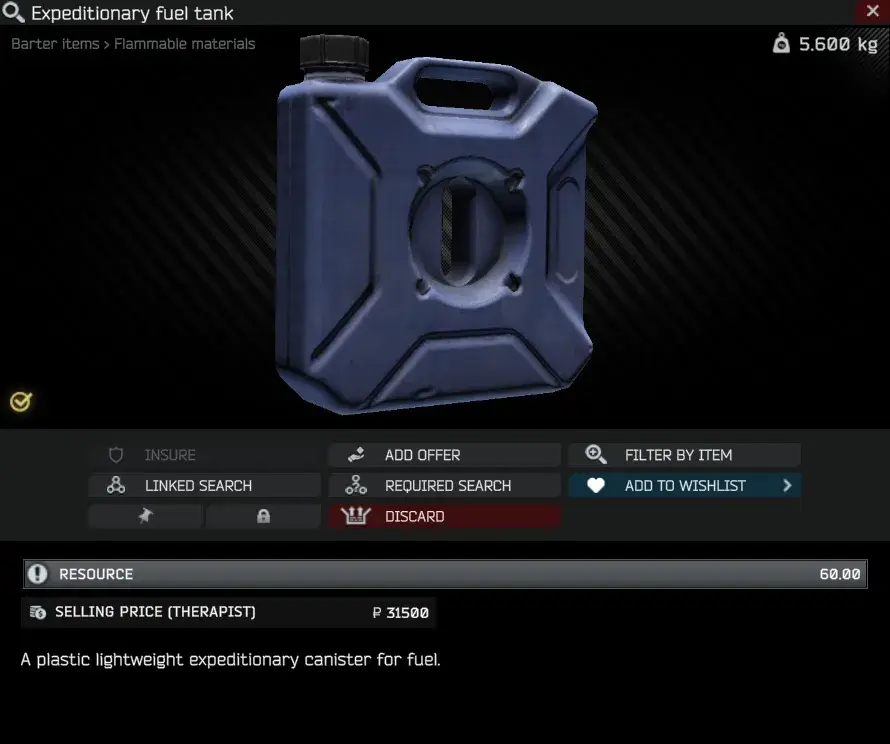
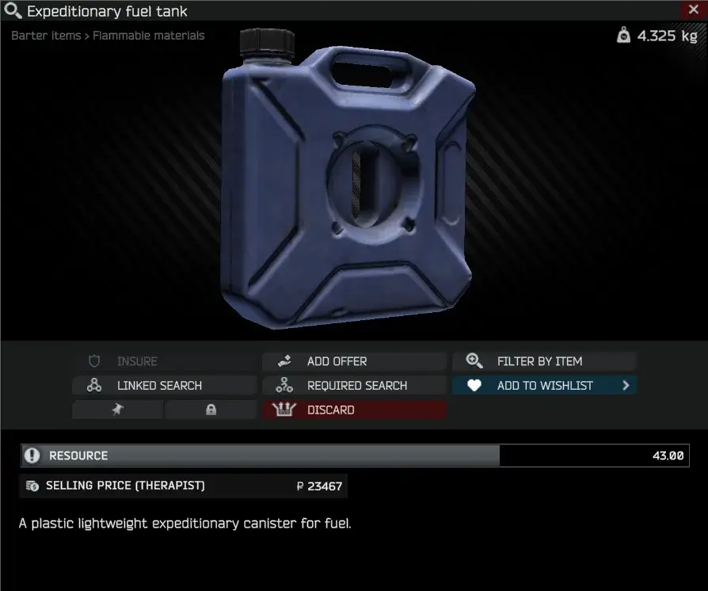

Mod
Dynamic Item Weights
- Downloads
- 9,769
- Favourites
- 28
- Mod lists
- 69
📜 Description
Dynamic Item Weights is a mod for Single Player THE CITY that adjusts the weight of items based on their current usage.
📁 Installation
- Download the latest release
- Copy the
BepInExfolder into your SPT folder - Start the game
📷 Preview


🛠️ Configuration
In-game menu
- Enable Plugin: Toggle dynamic item weights on/off
- Default Empty Fraction: Fallback empty weight as a fraction of the full item weight
emptyweights.json
A JSON file mapping the item template ID to the empty weight in kilograms
{
"57513f07245977207e26a311": 0.030, // Apple
"5d1b36a186f7742523398433": 2.500 // Fuel (Metal)
}
If an item is missing, the plugin uses
Default Empty Fractionof the original weight
📄 License
Distributed under the MIT License. See LICENSE for more information.